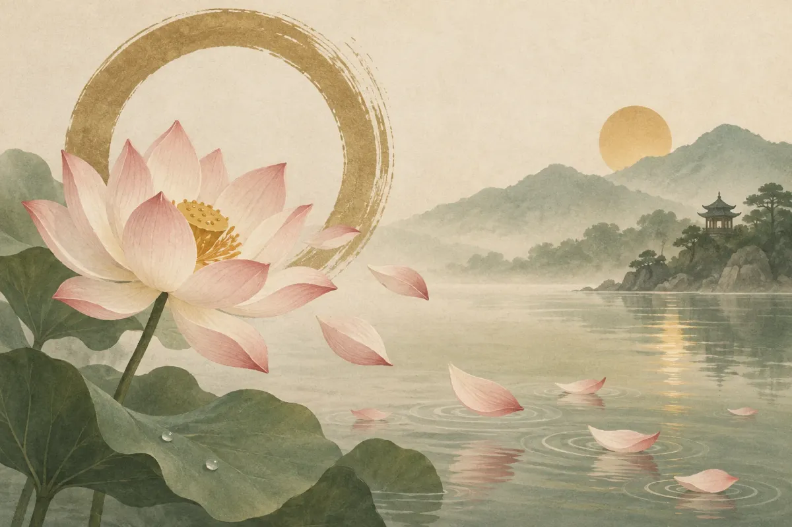

Hết duyên là trạng thái khi sự gắn kết, cảm xúc và cơ hội giữa hai người đã cạn kiệt — "duyên đã cạn, tình đã hết". Trong Phật giáo, hết duyên là quy luật tự nhiên của vô thường — có hợp ắt có tan, không phải lỗi của riêng ai. Bài viết giúp bạn nhận biết 7 dấu hiệu hết duyên, hiểu triết lý "duyên hết nên buông" và hướng dẫn cách buông bỏ để bình an, sẵn sàng cho những điều tốt đẹp phía trước.
Nếu bạn muốn tìm hiểu sâu hơn về gốc rễ mối liên kết giữa hai người, tham khảo thêm bài viết duyên phận là gì, nhân duyên trong Phật giáo và ý nghĩa kim lâu khi chọn tuổi kết hôn.
Hết duyên là gì? Ý nghĩa trong Phật giáo và dân gian
Hết duyên là trạng thái khi nhân và duyên giữa hai người không còn đủ điều kiện để duy trì mối quan hệ — cảm xúc cạn kiệt, sự gắn kết mất đi, cả hai không còn lựa chọn nhau. Đây không phải một sự kiện xảy ra trong một ngày. Hết duyên diễn ra dần dần, qua hàng tháng hoặc hàng năm, cho đến khi cả hai nhận ra mình đã trở thành người xa lạ.
Từ "duyên" trong tiếng Việt bắt nguồn từ khái niệm "duyên khởi" (Pratityasamutpada) trong Phật giáo. Theo giáo lý nhà Phật, mọi sự vật tồn tại nhờ nhân và duyên hội đủ. Khi nhân không còn, duyên tự tan — đây là quy luật vô thường, được ghi nhận trong Kinh Pháp Cú (Dhammapada). Không ai có lỗi, cũng không phải sự trừng phạt. Hết duyên đơn giản là hết — giống như mùa hoa nở rồi tàn, không cần lý do.
Trong đời sống dân gian Việt Nam, quy luật này được diễn đạt bằng tục ngữ "duyên sâu thì hợp, duyên mỏng thì tan". Cách nói giản dị mà đầy đủ: mối quan hệ bền vững khi cả hai bên còn nuôi dưỡng, và tan rã khi một bên — hoặc cả hai — không còn đầu tư. Người xưa không coi hết duyên là bi kịch, mà xem đó là phần tất yếu của đời người.
Hết duyên = nhân và duyên không còn đủ để duy trì mối quan hệ. Cả Phật giáo lẫn dân gian đều coi đây là quy luật tự nhiên, không phải lỗi của riêng ai.

Nhận ra duyên đã cạn là bước đầu tiên. Bước tiếp theo là nhìn vào những dấu hiệu cụ thể hơn.
7 dấu hiệu hết duyên vợ chồng thường gặp
Có 7 dấu hiệu phổ biến cho thấy duyên vợ chồng đã cạn: mất cảm xúc, im lặng kéo dài, cãi vã không hàn gắn, sống như người xa lạ, né tránh tương lai, nhẹ nhõm khi xa nhau và tìm kiếm kết nối ở nơi khác. Không phải ai có 1–2 dấu hiệu cũng đã hết duyên. Nhưng khi 4–5 dấu hiệu cùng xuất hiện trong thời gian dài, đó là tín hiệu cần lắng nghe.
- Không còn cảm xúc với nhau. Vui buồn của đối phương không còn ảnh hưởng đến bạn. Bạn nghe tin người ấy gặp khó khăn mà không cảm thấy lo lắng hay muốn giúp đỡ. Sự thờ ơ thay thế sự quan tâm.
- Im lặng kéo dài. Hai người ở cùng nhà nhưng không muốn chia sẻ hay tâm sự. Bữa cơm diễn ra trong yên lặng — không phải vì thoải mái, mà vì không còn gì muốn nói.
- Cãi vã liên tục mà không muốn hàn gắn. Mỗi cuộc cãi vã kết thúc bằng mệt mỏi thay vì giải pháp. Nghiên cứu từ Viện Gottman (John Gottman, 2015) gọi đây là "stonewalling" — một trong 4 hành vi dự báo tan vỡ hôn nhân với độ chính xác trên 90%.
- Sống chung như người xa lạ. Cùng mái nhà nhưng mỗi người một thế giới. Ở lại chỉ vì trách nhiệm với con cái, gia đình, tài chính — không vì tình cảm. Hôn nhân trở thành hợp đồng thay vì mối quan hệ.
- Né tránh kế hoạch tương lai. Không còn nói "mình sẽ" mà chỉ nói "tôi sẽ". Bạn không hình dung người kia trong bức tranh 5 năm tới. Khi đề cập tương lai chung, một trong hai né tránh hoặc chuyển đề tài.
- Cảm thấy nhẹ nhõm khi xa nhau. Những ngày đi công tác, về quê, hay đơn giản là đối phương đi vắng — bạn thấy dễ thở hơn. Nếu xa nhau mang lại bình yên, ở bên nhau đang gây ra điều ngược lại.
- Tìm kiếm sự kết nối ở nơi khác. Bạn tâm sự với đồng nghiệp, bạn bè, hoặc ai đó trên mạng nhiều hơn với người bạn đời. Ranh giới giữa "bạn" và "hơn bạn" bắt đầu mờ đi — tương tự các mô hình mối quan hệ mập mờ như benching hay các kiểu quan hệ không rõ ràng kiểu FWB.
Nhận ra dấu hiệu là một chuyện. Quyết định buông tay là chuyện khác — đặc biệt khi đã có hôn nhân, con cái và ràng buộc pháp lý.
Hết duyên và ly hôn: khi nào nên buông tay?
Nên buông tay khi cả hai đã cố gắng hết sức — đối thoại, tham vấn, thay đổi — mà mối quan hệ không cải thiện sau 6–12 tháng nỗ lực thực sự. Không phải mọi giai đoạn khó khăn đều là hết duyên. Điều quan trọng là phân biệt mệt mỏi nhất thời với sự cạn kiệt thực sự.
Mệt mỏi xảy ra khi áp lực bên ngoài đè nặng: công việc căng thẳng, con nhỏ quấy khóc, tài chính eo hẹp. Hết duyên xảy ra khi loại bỏ mọi áp lực ấy mà hai bên vẫn không muốn quay lại bên nhau. Bảng dưới đây giúp bạn phân biệt rõ hơn.
| Tiêu chí | Mệt mỏi nhất thời | Hết duyên thực sự |
|---|---|---|
| Cảm xúc | Vẫn yêu nhưng kiệt sức | Không còn cảm xúc |
| Phản ứng khi xa nhau | Nhớ nhung, lo lắng | Nhẹ nhõm, thờ ơ |
| Khi đề xuất thay đổi | Sẵn sàng thử | Không muốn cố thêm |
| Hình dung tương lai | Vẫn có hình ảnh cùng nhau | Không thấy nhau trong đó |
| Sau khi giải quyết áp lực | Tình cảm hồi phục dần | Vẫn trống rỗng |
Đừng vội kết luận hết duyên chỉ vì một giai đoạn khó khăn. Cũng đừng ở lại mãi trong một mối quan hệ đã chết chỉ vì sợ thay đổi. Cả hai thái cực đều gây hại.
Bài viết này không khuyên ly hôn, cũng không khuyên chịu đựng. Mỗi mối quan hệ có bối cảnh riêng. Điều duy nhất chắc chắn: khi ở bên nhau mà cả hai đều trở thành phiên bản tệ hơn của chính mình, buông tay là cách yêu cuối cùng. Đó là góc nhìn mà ít bài viết nào đề cập — buông không phải vì hết yêu, mà vì yêu đủ để dừng lại.
Triết lý Phật giáo có một quan niệm giúp nhiều người tìm được sự an yên trong hoàn cảnh này.
"Duyên hết nên buông" — triết lý sống từ Phật giáo
"Duyên hết nên buông" là triết lý Phật giáo nhắc nhở: khi nhân duyên đã hết, buông tay là hành động từ bi — giải thoát cho cả hai bên, không phải bỏ cuộc hay thất bại. Ba câu nói quen thuộc trong Phật giáo diễn đạt rõ triết lý này.
Thứ nhất, "duyên đến thì quý, duyên đi thì buông" — trân trọng khi có, thanh thản khi mất. Thứ hai, "hết duyên hết nợ, tự khắc sẽ buông" — khi nhân quả đã trả xong, sự gắn bó tự nhiên tan. Thứ ba, "vạn sự tùy duyên" — thuận theo tự nhiên, không cưỡng cầu. Cả ba đều hướng đến cùng một thông điệp: đừng giữ những gì đã hết.
Thiền sư Thích Nhất Hạnh viết trong The Heart of the Buddha's Teaching (1998): "Buông bỏ cho ta tự do, và tự do là điều kiện duy nhất của hạnh phúc." Buông không phải là từ bỏ trách nhiệm. Buông là ngừng bám víu vào điều đã không còn nuôi dưỡng cả hai. Khi một mối quan hệ chỉ mang lại khổ đau, việc giữ chặt không phải là kiên trì — mà là bám chấp.
Nhiều người hiểu sai "buông" là lạnh lùng, vô cảm. Ngược lại, buông đòi hỏi lòng dũng cảm. Bạn phải đối mặt với nỗi sợ cô đơn, sự phán xét của người ngoài, cảm giác thất bại trước gia đình và xã hội. Buông bỏ một mối quan hệ hết duyên đòi hỏi sức mạnh nội tâm lớn — chấp nhận thực tại thay vì bám vào ảo tưởng rằng "cố thêm sẽ được".
Áp dụng "vạn sự tùy duyên" không có nghĩa là thụ động. Nó có nghĩa là làm hết sức, rồi chấp nhận kết quả. Nếu đã nỗ lực mà duyên vẫn hết, hãy thanh thản bước tiếp. Hiểu triết lý là bước quan trọng. Nhưng thực hành buông bỏ trong đời thực đòi hỏi những hành động cụ thể hơn.
Khi sẵn sàng bắt đầu lại
Nếu bạn đang chuẩn bị cho một khởi đầu mới, hãy xem tuổi hợp và chọn ngày đẹp cho hành trình tiếp theo.
Cách buông bỏ khi hết duyên để bình an
Để buông bỏ khi hết duyên, bạn cần 6 bước: chấp nhận cảm xúc, cắt liên lạc cần thiết, tập trung bản thân, chia sẻ với người tin cậy, rút ra bài học và mở lòng với tương lai. Không có công thức nào đúng cho tất cả. Nhưng 6 bước này giúp nhiều người đi qua giai đoạn khó khăn mà không để lại quá nhiều vết thương.
- Chấp nhận cảm xúc — cho phép mình buồn. Buồn, giận, tiếc nuối đều là phản ứng bình thường. Không cần gồng mình "mạnh mẽ". Nghiên cứu từ Hiệp hội Tâm lý Hoa Kỳ (APA, 2020) cho thấy chấp nhận cảm xúc tiêu cực giúp hồi phục nhanh hơn so với kìm nén. Khóc khi cần khóc. Buồn khi cần buồn. Rồi sẽ qua.
- Cắt liên lạc khi cần thiết. Giai đoạn đầu sau chia tay, mỗi tin nhắn hay cuộc gọi đều kéo bạn lùi lại. Đặt ranh giới rõ ràng: không theo dõi mạng xã hội, không hỏi thăm qua người quen, không tìm cớ gặp lại.
- Tập trung vào bản thân. Thể dục, sở thích, công việc — những thứ giúp bạn nhớ ra mình là ai khi không ở cạnh ai. Đăng ký một lớp học mới, bắt đầu chạy bộ buổi sáng, hoặc viết nhật ký. Đầu tư vào bản thân là khoản đầu tư không bao giờ mất giá.
- Chia sẻ với người thân tin cậy. Một cuộc trò chuyện thật lòng với bạn bè hoặc gia đình giúp bạn nhìn sự việc từ góc khác. Nếu cảm xúc quá nặng nề, tham vấn chuyên gia tâm lý là lựa chọn đúng đắn — không phải dấu hiệu yếu đuối.
- Rút ra bài học từ mối quan hệ. Mỗi mối quan hệ dạy bạn điều gì đó: về ranh giới cá nhân, về cách giao tiếp, về những gì bạn cần ở một người bạn đời. Ghi nhận giá trị của những gì đã có, thay vì chỉ oán trách những gì đã mất.
- Mở lòng với tương lai. Hết duyên cũ không đóng cửa duyên mới. Khi vết thương đã lành, hãy cho phép mình tin rằng hạnh phúc vẫn ở phía trước. Không ai bắt bạn phải vội, nhưng cũng đừng tự nhốt mình trong quá khứ.
Viết một lá thư cho người cũ nhưng đừng gửi đi. Đổ hết lên giấy những gì muốn nói, rồi xé đi hoặc đốt đi. Nhiều chuyên gia tâm lý khuyến nghị phương pháp này để giải phóng cảm xúc mà không tạo thêm xung đột.
Nội dung bài viết mang tính tham khảo. Nếu bạn gặp khó khăn nghiêm trọng về tâm lý sau chia tay, hãy liên hệ chuyên gia tâm lý hoặc tổng đài hỗ trợ sức khỏe tâm thần 1800 599 920.
Buông bỏ xong rồi, phía trước là gì?
Sau khi hết duyên: bắt đầu lại từ đâu
Hết duyên cũ không có nghĩa là hết hạnh phúc — mỗi cuộc gặp gỡ mới là một duyên phận mới. Khi đã sẵn sàng, bạn bắt đầu lại bằng cách mở lòng, tìm hiểu bản thân kỹ hơn và đón nhận cơ hội đến.
Nhiều người sợ bắt đầu lại vì nghĩ tuổi đã lớn, cơ hội đã qua. Thực tế khác: theo Tổng cục Thống kê Việt Nam (2023), tuổi kết hôn trung bình đang tăng dần — nam 27,2, nữ 23,1. Nhiều cặp đôi tìm thấy nhau ở tuổi 30, 40 và xây dựng gia đình hạnh phúc. Hết duyên cũ ở tuổi nào không quan trọng bằng sẵn sàng ở thời điểm nào.
Khi sẵn sàng cho mối quan hệ mới, bạn có thể bắt đầu bằng những bước cụ thể:
- Xem tuổi hợp với người mới qua công cụ tra cứu ngày cưới.
- Tìm hiểu tuổi cưới đẹp năm 2027 nếu đang lên kế hoạch.
- Khám phá thiệp cưới online — cách gửi lời mời hiện đại cho hành trình mới.
"Mỗi cuộc gặp gỡ là một duyên phận mới" — câu này không chỉ là lời an ủi. Nó là sự thật. Hết duyên cũ, bạn mang theo bài học, sự trưởng thành, và biết rõ hơn mình cần gì ở một người bạn đời. Đó là lợi thế, không phải gánh nặng.
Những câu nói hay về hết duyên và buông bỏ
8 câu nói giúp bạn vững lòng khi trải qua giai đoạn hết duyên — từ triết lý Phật giáo, tục ngữ Việt Nam đến danh ngôn quốc tế.
"Duyên đến thì quý, duyên đi thì buông."— Triết lý Phật giáo
"Hết duyên hết nợ, tự khắc sẽ buông."— Ca dao Việt Nam
"Duyên sâu thì hợp, duyên mỏng thì tan."— Tục ngữ Việt Nam
"Vạn sự tùy duyên — thuận theo tự nhiên, không cưỡng cầu."— Kinh Phật
"Buông bỏ cho ta tự do, và tự do là điều kiện duy nhất của hạnh phúc."— Thích Nhất Hạnh
"The hottest love has the coldest end." (Tình yêu nồng cháy nhất có kết cục lạnh lẽo nhất.)— Socrates
"If you love someone, set them free." (Nếu yêu ai, hãy để họ tự do.)— Richard Bach, Illusions (1977)
"Có những người không thuộc về nhau dù cả hai đều tốt. Không phải ai đúng ai sai — chỉ là hết duyên."— Khuyết danh
Mỗi câu nói gói gọn một bài học: hết duyên không phải thất bại, mà là một phần tự nhiên của hành trình sống. Lưu lại câu nào chạm đến bạn — đôi khi vài chữ đủ để giữ mình vững trong lúc khó.
Câu hỏi thường gặp
Hết duyên là gì theo Phật giáo?
Dấu hiệu vợ chồng hết duyên nợ là gì?
Hết duyên có nên cố gắng hàn gắn không?
"Vạn sự tùy duyên" nghĩa là gì?
Làm sao để buông bỏ khi hết duyên?
Lời cuối
Hết duyên không phải dấu chấm hết. Đó là dấu chấm phẩy — một câu chuyện tạm dừng để câu chuyện khác bắt đầu. Bạn không cần giữ một mối quan hệ đã hết nhân duyên chỉ vì sợ cô đơn hay sợ thất bại. Buông bỏ đúng lúc là cách bạn tôn trọng cả người kia lẫn chính mình.
Dù phía trước là một mình hay bên cạnh ai mới, bạn đã mang theo bài học và sự trưởng thành từ mối quan hệ cũ. Đó là duyên — duyên của chặng đường mới. Hết duyên tình yêu, nhưng duyên sống thì vẫn còn dài.
Templexa
Đội ngũ làm thiệp cưới online tại Templexa — mỗi tuần trò chuyện với hàng chục cặp đôi sắp cưới, và viết lại những gì đã học được trong Cẩm nang cưới hỏi.